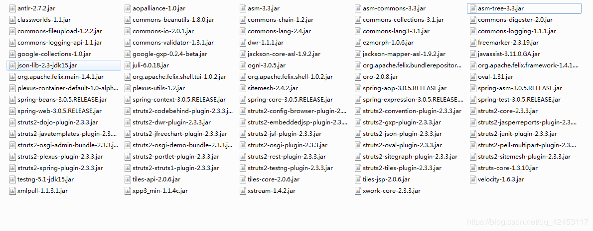
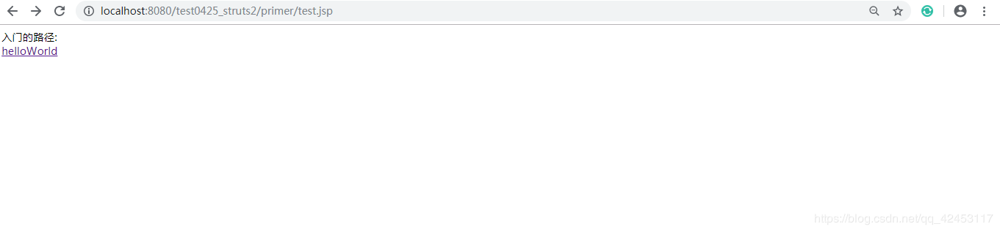
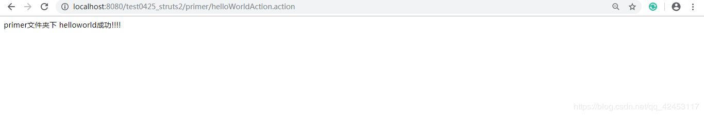

在制定了学习计划的学习过程中，我感觉学习还是很有效率的。很短的时间内，我便学习完了JavaWeb的连接池、DbUtils框架及其一些工具类的使用。
学无止境，学习这些知识还远远不够，所以，在接下来的时间里，我将对JavaWeb中的SSH开发模式进行一个简单的学习，并用博客记录学习进度。
开发模式相信大家都有接触或听说，但又觉得这个东西很神秘，的确，这看不见摸不着的东西确实很让人好奇，所以，从今天开始，我将带着大家去揭开它神秘的面纱。
我会把整个开发模式分为三部分，第一部分：Struts2，第二部分：Hibernate，第三部分：Spring。但是即使分为了三部分，每个部分的框架仍然略显复杂。所以，我将在每部分的框架中继续细分。
那么，今天便开始第一部分的内容，Struts2。
首先了解一下Struts2的历史吧。
Struts1
Struts2
那Struts2到底是什么呢？
Struts2是一个用来开发MVC应用程序的框架。它提供了Web应用程序开发过程中的一些常见问题的解决方案：
我们假设一个场景，在一个jsp页面中有多个超链接，点击每个超链接都需要进行对应的处理，每个超链接对应一个Java类，类中有一个方法，我们的目的就是要点击超链接调用对应的Java类的方法，对于这样的场景，我们有两种解决方案，一是通过Servlet去调用Java类，二是通过过滤器去调用Java类。但是两种方法都很麻烦，重复的代码特别多，这时候，Struts2框架就起到了至关重要的作用，它可以很方便地帮助我们解决这个问题。
那么，如何搭建Struts2的开发环境呢？
搭建Struts2环境时，我们一般需要做以下几个步骤的工作：
我们按照步骤一步步走。
创建web项目，名为test0425_structs2。
然后就是准备jar包了，struts2的jar包其实非常的多。

那这么多的jar包需要全部复制到项目中吗？其实不需要，我们选取几个比较重要的jar包进行导入。
因为百度网盘的上传数量有限，所以这么多的jar包我就没办法上传了，我上传几个我们接下来需要用到的，大家需要完整的jar包的话，可以去百度自行下载。
链接：https://pan.baidu.com/s/1vpzscP_uUnTrJyki-yCeUg
提取码：js2u
复制这段内容后打开百度网盘手机App，操作更方便哦
把这几个关键的jar包导入项目，第二步就完成了。
先来了解一下这几个jar包的作用。
struts2-core-2.3.1.1.jar：Struts 2框架的核心类库
xwork-core-2.3.1.1.jar：Command模式框架,WebWork和Struts2都基于xwork
ognl-3.0.3.jar：对象图导航语言(Object Graph Navigation Language),
struts2框架通过其读写对象的属性
freemarker-2.3.18.jar：Struts 2的UI标签的模板使用FreeMarker编写
commons-logging-1.1.x.jar：ASF出品的日志包，Struts 2框架使用这个日志包来支持Log4J和JDK 1.4+的日志记录。
commons-fileupload-1.2.2.jar： 文件上传组件，2.1.6版本后需要加入此文件
commons-io-2.0.1.jar：传文件依赖的jar包
commons-lang-2.5.jar：对java.lang包的增强
asm-3.3.jar：提供了字节码的读写的功能,包含了核心的功能，而其他的jar包都是基于这个核心的扩展.
asm-commons-3.3.jar：提供了基于事件的表现形式。
asm-tree-3.3.jar：提供了基于对象的表现形式。
javassist-3.11.0.GA.jar：代码生成工具, struts2用它在运行时扩展 Java类
接下来创建几个jsp文件，直接把代码贴上来。
新建primer文件夹，在该文件夹下创建text.jsp
<%@ page language="java" pageEncoding="utf-8" contentType="text/html; charset=utf-8"%>
<%@ taglib uri="/struts-tags" prefix="s"%>
<html>
<head>
<title>My JSP 'index.jsp' starting page</title>
</head>
<body>
入门的路径:<br>
<a href="${pageContext.request.contextPath }/primer.helloWorldAction.action">helloWorld</a>
</body>
</html>继续在该文件夹下创建success.jsp
<%@ page language="java" pageEncoding="utf-8" contentType="text/html; charset=utf-8"%>
<%@ taglib uri="/struts-tags" prefix="s"%>
<html>
<head>
<title>My JSP 'index.jsp' starting page</title>
</head>
<body>
primer文件夹下 helloworld成功!!!!<br>
</body>
</html>
接下来是第四步，创建action文件了。
在src目录下创建HelloWorldAction类并实现Action接口。
public class HelloWorldAction implements Action {
public String execute() throws Exception {
System.out.println("HelloWorldAction ...");
return "success";
}
}
第五步，编写配置文件。
在src目录下创建struts.xml文件，文件名称是固定的，不能改变。
<?xml version="1.0" encoding="UTF-8"?>
<!DOCTYPE struts PUBLIC
"-//Apache Software Foundation//DTD Struts Configuration 2.3//EN"
"http://struts.apache.org/dtds/struts-2.3.dtd">
<struts>
<!--
package标签:表示包，action里的所有配置都放置在包下，规范化管理
*name:表示包的名称，是唯一的，用于继承
*namespace:命名空间，相当于房间号是唯一的
*extends:"struts-default.xml"也是一个配置文件，是struts2框架底层提供的
-->
<package name="primer" namespace="/primer" extends="struts-default">
<!--
action标签:表示请求链接
*name:action的名称，是唯一的
*class:对应要执行的action类的完整路径
-->
<action name="helloWorldAction" class="cn.itcast.action.HelloWorldAction">
<!--
result标签:返回结果
*name:返回结果类型，要与execute()方法的返回值相对应
*result标签后面的文本部分:要转向的页面
-->
<result name="success">/success.jsp</result>
</action>
</package>
</struts>
最后一步，在web.xml文件中配置过滤器。
<filter>
<filter-name>StrutsPrepareAndExecuteFilter</filter-name>
<filter-class>org.apache.struts2.dispatcher.ng.filter.StrutsPrepareAndExecuteFilter</filter-class>
</filter>
<filter-mapping>
<filter-name>StrutsPrepareAndExecuteFilter</filter-name>
<url-pattern>/*</url-pattern>
</filter-mapping>这是struts2提供的过滤器，所以class标签的内容是固定的。
这样所有步骤就都完成了。
将项目部署运行。

点击helloWorld，出现如图所示。

程序运行成功，需要注意的是，在web.xml文件中的
现在，我们已经入门了struts2了，虽然有点复杂，但是逻辑清晰的话，其实它并不难。
篇幅有限，struts2的其它内容我将分为几个小节在接下来的博客中继续介绍。